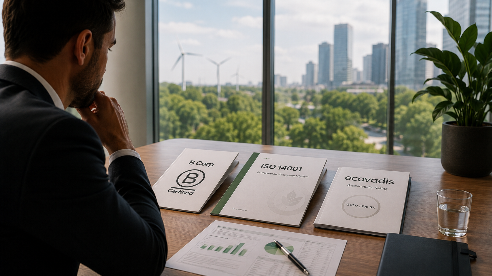

A pergunta por trás da pergunta
A conversa sobre certificações de sustentabilidade começa quase sempre da mesma forma. O gestor ouve falar da B Corp num evento de startups, vê um concorrente com ISO 14001 numa proposta comercial e recebe um questionário EcoVadis de um cliente corporativo. Três fontes diferentes, três nomes diferentes, um impulso comum: "precisamos de ter algo disto."
O problema com este ponto de partida é que as três certificações não são versões graduadas da mesma coisa. São instrumentos com lógicas distintas, audiências distintas e exigências distintas. Escolher antes de mapear os objetivos é como contratar assessoria jurídica antes de decidir se o problema é laboral, fiscal ou contratual.
A pergunta certa não é "qual é melhor?". É "o que preciso que esta certificação faça pela minha empresa?" Há essencialmente quatro respostas possíveis: qualificar como fornecedor de clientes corporativos, reposicionar a marca junto de consumidores ou investidores, demonstrar conformidade com sistemas de gestão ambiental, ou atrair e reter talento com perfil de propósito. Cada uma aponta para um instrumento diferente.
O que os três modelos realmente oferecem
Antes de qualquer critério de decisão, vale a pena ter uma leitura clara do que cada certificação certifica de facto.
| Dimensão | B Corp | ISO 14001 | EcoVadis |
|---|---|---|---|
| Foco | Desempenho global: impacto ambiental, social, governação, trabalhadores, comunidade | Sistema de gestão ambiental documentado e auditado | Desempenho ESG de fornecedores em cadeias de aprovisionamento |
| Para quem foi desenhado | Empresas com missão de impacto, B2C e investimento de impacto | Empresas com processos industriais ou procurement de grandes clientes | Fornecedores de empresas multinacionais com programas de supply chain ESG |
| Quem a reconhece | Consumidores conscientes, fundos de impacto, candidatos a emprego, media | Clientes industriais e corporativos, licitações públicas | Equipas de procurement de empresas cotadas (Renault, Nestlé, Schneider Electric, etc.) |
| Prazo típico | 12 a 24 meses | 3 a 12 meses | 4 a 8 semanas (questionário inicial) |
| Custo indicativo | €1.500 a €15.000/ano (taxa) + custo de conformidade elevado | €5.000 a €30.000 (certificação e auditoria) + manutenção anual | €500 a €5.000/ano conforme dimensão da empresa |
| O que certifica | Os valores e o impacto holístico da empresa | Um sistema de gestão formal, documentado e auditável | A posição relativa face a pares num score de 0 a 100 |
| Exige mudança estrutural? | Sim: frequentemente exige alteração estatutária e reestruturação de políticas | Sim: requer documentação de processos e auditorias internas regulares | Não necessariamente: avalia o que já existe e orienta melhorias |
A leitura desta tabela já resolve metade das dúvidas. A B Corp certifica valores. O ISO 14001 certifica um processo. O EcoVadis certifica uma posição relativa. Confundir os três objetos de certificação é a origem da maioria das escolhas desalinhadas.
Os critérios de decisão
Com a lógica de cada modelo clara, há quatro critérios que orientam a decisão para a maioria das situações concretas.
Critério 1: Quem vai ler o selo
A pergunta mais objetiva e frequentemente ignorada é: quem, concretamente, vai reconhecer e valorizar esta certificação?
A B Corp tem forte reconhecimento junto de consumidores com perfil de valores (alimentação, moda, consultoria de impacto), fundos de impacto e candidatos a emprego que filtram empregadores por propósito. É pouco relevante num processo de procurement B2B de um cliente industrial alemão que quer evidências documentadas de conformidade ambiental.
O ISO 14001 é reconhecido em licitações públicas, contratos industriais e cadeias de fornecimento de clientes que exigem certificação de terceiros como critério de qualificação. Tem pouca tração junto de consumidores finais ou fundos de capital de risco.
O EcoVadis foi especificamente desenhado para responder a requisitos de cadeias de aprovisionamento de multinacionais. Se a empresa tem ou ambiciona ter clientes como Siemens, L'Oréal, Carrefour ou qualquer empresa cotada no Fortune 500 com programa de supply chain sustainability, o EcoVadis não é uma opção: é frequentemente um requisito de qualificação.
Critério 2: A maturidade operacional disponível
As três certificações têm exigências muito diferentes de documentação, processos internos e recursos.
A B Corp avalia a empresa através do B Impact Assessment, um questionário extenso que abrange governação, trabalhadores, comunidade, ambiente e clientes. O resultado depende da realidade da operação, não da forma como as respostas são formuladas. Empresas sem políticas de recursos humanos documentadas, sem métricas de impacto ambiental e sem governação formalizada raramente passam o limiar de 80 pontos exigido na primeira tentativa. O processo revela lacunas que precisam de ser corrigidas antes de qualquer certificação ser possível. Para empresas em fase inicial de formalização, isto pode ser valioso como diagnóstico mas frustrante como processo de certificação.
O ISO 14001 exige um sistema de gestão ambiental documentado: política ambiental, identificação de aspetos ambientais significativos, objetivos e metas mensuráveis, procedimentos de controlo operacional e auditoria interna periódica. Não é possível obter sem ter processos genuinamente estruturados. A auditoria de certificação deteta inconsistências com rapidez.
O EcoVadis aceita qualquer ponto de partida. Avalia o que existe, compara com o setor e devolve um relatório de melhoria prioritizado. Uma empresa que nunca formalizou a sua abordagem ESG pode submeter o questionário, obter um score e usar o relatório para guiar os dois a três anos seguintes. Não é necessário ter um sistema maduro para começar.
Critério 3: O que a empresa precisa provar e a quem
Há uma distinção importante entre certificar um processo, certificar valores e certificar uma posição relativa. Esta distinção tem consequências diretas na mensagem que a certificação transmite.
A ISO 14001 certifica que a empresa tem um sistema de gestão ambiental que funciona de forma sistemática. Não afirma que o impacto ambiental da empresa é reduzido, mas que os aspetos ambientais significativos são identificados e geridos. É um certificado de processo, reconhecido por quem valoriza rigor procedimental.
A B Corp certifica desempenho holístico medido contra um conjunto de indicadores comparados com outras empresas certificadas. É um certificado de impacto e valores. A empresa não está apenas a dizer que gere bem os seus processos: está a afirmar que opera com um propósito que vai além do lucro e que esse propósito é verificável.
O EcoVadis certifica a posição relativa da empresa no seu setor em matéria ESG. Um score de bronze (percentil 25-44) não significa que a empresa é sustentável. Significa que tem um programa ESG documentado e em melhoria contínua, mensurável e comparável com concorrentes.
Uma empresa que quer diferenciar-se junto de um nicho de consumidores conscientes não se diferencia com uma ISO 14001. Uma empresa que precisa de qualificar como fornecedor de um cliente multinacional não resolve o problema com uma B Corp. O objeto de certificação tem de corresponder ao argumento que se quer fazer.
Critério 4: O custo real da conformidade
A taxa anual de certificação é normalmente a componente menor do custo total. O custo real é o tempo interno despendido, as mudanças operacionais necessárias e o custo de consultoria para preparar e manter o processo.
Uma empresa de 30 colaboradores que decide obter a B Corp a partir do zero pode facilmente investir seis a doze meses de trabalho interno significativo de um ou dois colaboradores, acrescido de consultoria externa, antes de sequer submeter a candidatura. O custo de conformidade (implementar as mudanças necessárias para passar os 80 pontos) é frequentemente mais elevado do que o custo de certificação propriamente dito. Este cálculo raramente é feito antes de a decisão ser tomada.
O ISO 14001 tem custos de auditoria de certificação que variam com a dimensão da empresa mas que raramente ficam abaixo de €5.000 a €8.000 para uma PME, mais a manutenção do sistema e as auditorias de vigilância anuais.
O EcoVadis tem o menor custo de entrada. O questionário pode ser respondido internamente em dois a três dias de trabalho concentrado. O custo principal é o custo das melhorias ao longo do tempo, que o próprio relatório do EcoVadis ajuda a priorizar por impacto no score.
Quando o framework não decide
Há situações em que a lógica acima não chega para decidir porque a escolha não é uma escolha.
O caso mais frequente é o requisito contratual. Se um cliente existente ou potencial exige EcoVadis como condição de qualificação de fornecedor, o EcoVadis não é uma opção estratégica: é um pré-requisito. O mesmo se aplica à ISO 14001 em determinados concursos públicos e em cadeias de fornecimento de clientes industriais com políticas de qualificação formalizadas. Nestas situações, o framework de decisão serve para planear a sequência e o investimento, não para escolher entre certificações.
O segundo caso são as exigências de investidores. Alguns fundos de capital de risco e de private equity incorporaram critérios ESG nos seus processos de due diligence. Se a empresa está em processo de captação ou antecipa uma ronda a médio prazo, vale a pena mapear o perfil dos investidores-alvo e verificar se têm preferências declaradas. A B Corp é frequentemente vista como sinal positivo por fundos de impacto e por alguns fundos generalistas com compromissos ESG. O EcoVadis é crescentemente solicitado por grandes fundos de private equity em due diligence de portfolio.
O terceiro caso são as dinâmicas de setor. Em alguns setores, a B Corp tornou-se um sinal de posicionamento tão forte que a ausência começa a ser mais visível do que a presença. Na indústria alimentar orgânica, no turismo responsável e em determinados segmentos de consultoria e tecnologia, a B Corp deixou de ser diferenciação para se aproximar de credencial de entrada. Em contrapartida, há setores onde qualquer certificação ESG continua a ser completamente irrelevante para os clientes. O mapeamento do setor específico é insubstituível.
Quando nenhuma destas pressões externas existe, o framework dos quatro critérios decide. E a resposta mais frequente para PME portuguesas sem pressão de clientes multinacionais é começar pelo EcoVadis como exercício de diagnóstico e construir maturidade ao longo do tempo.
Não há uma resposta universal. Mas a sequência lógica existe: primeiro mapear quem precisa de ler o certificado, depois avaliar a maturidade interna disponível, depois calcular o custo real. Só então a escolha entre os três modelos se torna evidente. Na maioria dos casos, a empresa chega a esta conclusão sem ambiguidade. O problema é que raramente faz este exercício antes de iniciar o processo de certificação.
A perspetiva que aplicamos com clientes nestas decisões começa sempre pela mesma pergunta: quem precisa de ver este certificado e o que vai fazer com ele? É uma pergunta simples. É também a que mais frequentemente fica por fazer.
O segundo passo é fazer o exercício de custo real, não o custo da taxa de certificação, mas o custo de conformidade. Quantas horas internas, que mudanças de processo, que consultoria de preparação. Este exercício muda a prioridade de escolha com uma frequência surpreendente.
O terceiro é reconhecer que os três modelos não são mutuamente exclusivos nem têm de ser escolhidos no mesmo momento. Uma empresa pode começar com EcoVadis como resposta a um requisito de cliente, construir maturidade ESG ao longo de dois a três anos e, quando tiver dimensão e modelo de negócio que o justifique, avançar para a B Corp. A certificação com menor custo de entrada não é a de menor valor estratégico: pode ser o primeiro passo de uma trajetória coerente.
Comentários, correções ou contrapontos são bem-vindos: geral@opencapital.pt